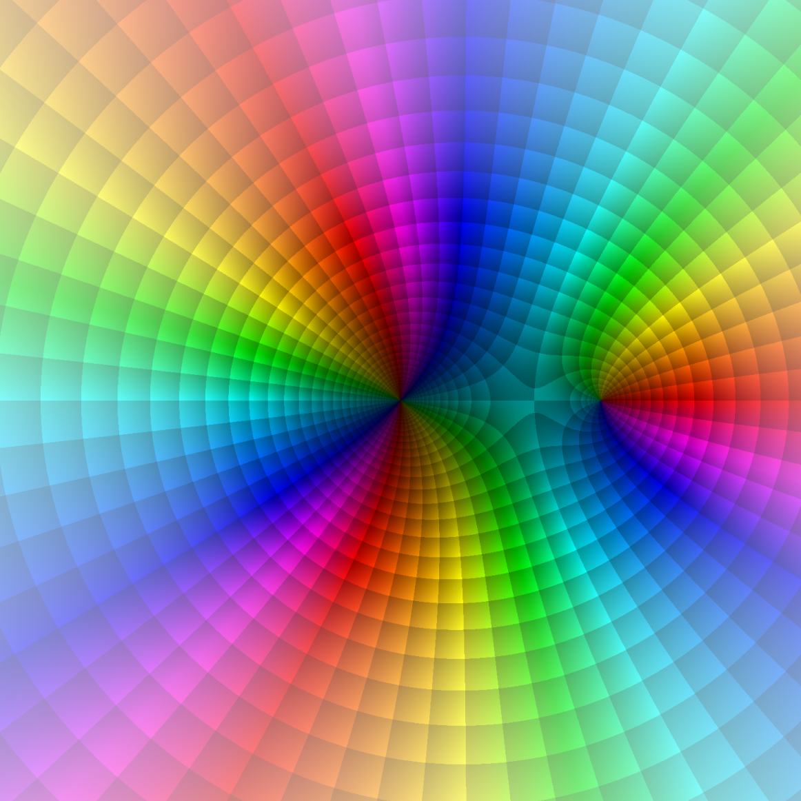

matthias beck
professor of mathematics

|
MATH 380: Introduction to Complex Analysis Spring 2023 |
 |
| Lecture | Mon/Wed/Fri 1:00-1:50 p.m. TH 210 |
| Prerequisites | MATH 228 & 301 with grades of C or better or consent of the instructor |
| Instructor | Dr. Matthias Beck |
| Office | Thornton Hall 933 |
| Office hours | Mondays 4-5, Wednesdays 11-12, Fridays 10-11 & by appointment |
Course objectives. Our goal is to study the calculus of functions in one complex variable. That is, we will look at concepts of real-variable functions and see which of these concepts and their accompanying theorems can be transferred into the complex realm, which have to be modified, and which don't exist in the world of complex numbers. We will see that there are concepts and theorems in all of these three categories.
Syllabus. Topics in this course will include:
Textbook. M. Beck, G. Marchesi, D. Pixton, and L. Sabalka, A First Course in Complex Analysis, version 1.54 (2018).
Homework. I will assign homework problems as we go through the material. You may (and should) work together with your class mates. We can discuss the homework problems at any time during class, and you can hand any of your solutions for feedback. We will have a homework quiz every Monday at the beginning of class, in which you will be asked one definition and one problem given in the previous week.
Sage. You will be expected to use the open math software sage in some of your homework assignments. Here is a good introduction to sage.
Grading system.
| Homework quizzes | 60% |
| Midterm Exam (March 29, in class) | 20% | Final Exam (May 22, 12:30 p.m.) | 20% |
I want to ensure that each of you accomplishes the goals of this course as comfortably and successfully as possible. At any time you feel overwhelmed or lost, please come and talk with me.
The math. The way to learn math is through doing math. It is vital and expected that you attend every class meeting. You will get a good feel for the math from there, but it is even more crucial that you do the homework. Working in groups is not only allowed but strongly recommended. Our class is based on Federico Ardila's Axioms:
Fine print.
SFSU academic calender
BS rule
Academic Integrity and Plagiarism
Tutoring
CR/NCR grading
Incomplete grades
Late and retroactive withdrawals
Students with disabilities
Religious holidays
This syllabus is subject to change. All assignments, as well as other announcements on tests, policies, etc., are given in class. If you miss a class, it is your responsibility to find out what's going on. I will try to keep this course web page as updated as possible, however, the most recent information will always be given in class. Always ask lots of questions in class; my courses are interactive. You are always encouraged to see me in my office.
department of mathematics
san francisco state university
1600
holloway ave
san francisco, ca 94132
becksfsu | @ | gmail.com |
"I believe that numbers and functions of Analysis are not the arbitrary result of our minds; I think that they exist outside of us, with the same character of necessity as the things of objective reality, and we meet them or discover them, and study them, as do the physicists, the chemists and the zoologists."
David Hilbert (1862-1943)
 all materials on my websites are licensed under a creative commons attribution-noncommercial 3.0 unported license, unless otherwise noted.
all materials on my websites are licensed under a creative commons attribution-noncommercial 3.0 unported license, unless otherwise noted.